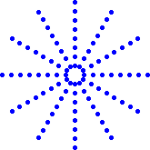
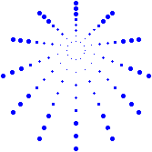

Marking Scheme
- Please submit
fireworks.py, nothing else.
- Shooting a firework (30 marks)
- The firework should start at a random position in the bottom half of the screen (10 marks)
- The firework should end at a random position in the upper half of screen (10 marks)
- The shooting line from the starting position to the ending position should be removed (10 marks)
- Exploding a firework (30 marks)
- Pick a random firework color from the list (10 marks)
- Pick a random size and a random number of explosion direction for firework (10 marks)
- Draw the ring of dots as the firework (10 marks)
-
Here is an example of a basic firework (without the more fancy effects):
-

- In this example a blue color has been randomly chosen from the list
- The radius is changing from 10 to 80
- The number of explosion directions is 12
- More fancy effects (30 marks)
- A faster speed should be used with tracer turned off (5 marks)
- The turtle should be hidden (5 marks)
- The gravitation effect should be used as discussed (20 marks)
- Here is an example of adding gravitation effect to a firework:

- Here is an example of adding gravitation effect to a firework:
- Displaying the background image and enabling firework sounds appropriately (10 marks)
- Display a background image file in an appropriate way in your program (5 marks)
- Use a sound file in an appropriate way in your program e.g. when a firework is launched (5 marks)
-
To be clear:
- You do not need to submit the background image file (i.e.,
hong_kong.gif) - You do not need to submit the sound file (i.e.,
explosion.wav) - You do not need to submit the sound library file (i.e.,
playsound.py)
- You do not need to submit the background image file (i.e.,
- You should assume the background image file, the sound file and the sound library file are placed in the same folder as
fireworks.py

- Enter your name and student ID number in the top of your Python code using a comment
e.g.# Done by CHAN, Tai Man SID:01234567- This helps to confirm this is your work
Submission Information
- Check your work before you submit it
- Using the marking scheme, you can carefully check your work before you hand it in
- You should be able to get 100% for your lab work
-
Submit your work before the deadline
- You won't be able to submit anything after the deadline
- It is a smart idea to hand in your work days before the deadline!
-
Make sure you submit the correct file, not a wrong file
- You can download your most recent submission from your Canvas Submission page
- Then you can check exactly what you handed in
- If you find you have submitted something which is not appropriate, you can submit a corrected file
- You can only do this before the deadline
- You can download your most recent submission from your Canvas Submission page
- What is your exact deadline?
- You get 5 days after the teaching day of your registered lab to submit your work
- The dates/times are shown below, using Hong Kong Time
-
Here are the exact deadlines:
The Weekday of your Registered Lab Lab session Deadline Date and Time Link Thursday labs LA1 22 March 2022 Tuesday 23:59 LA1 Submission Wednesday labs LA2 21 March 2022 Monday 23:59 LA2 Submission